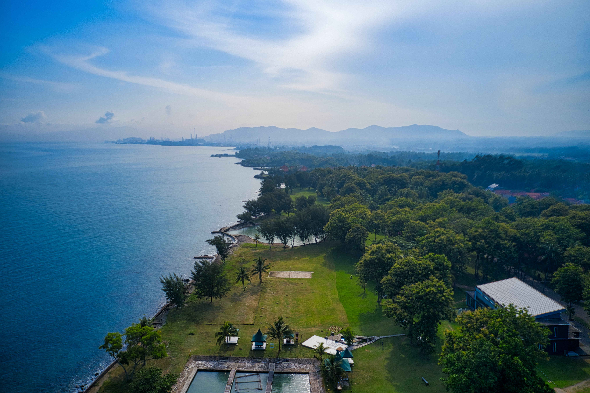
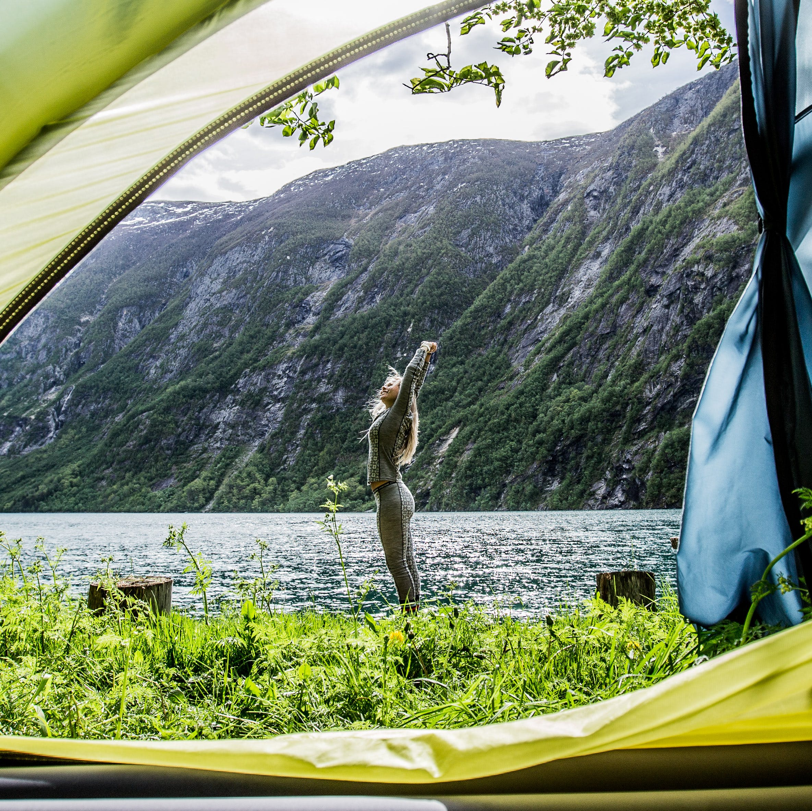
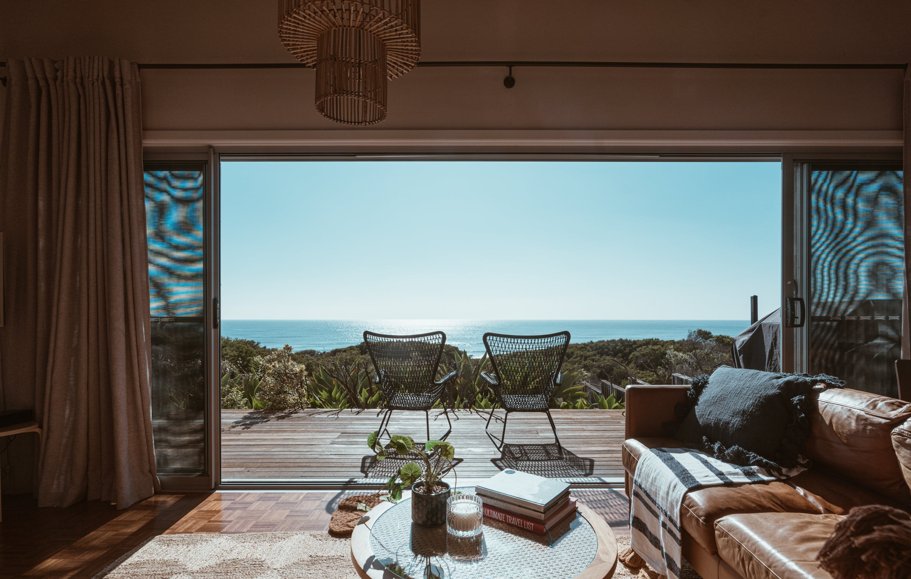

Ce page web vous permettera de mieux préparer votre destination et
de savoir ce qui peut vous attendre dans un hotel
S'héberger en Indonésie :
L'Indonésie possède un large pannel d’hébergements, allant de la pièce rudimentaire, dotée d’un simple matelas,
à la chambre très luxueuse d’un cinq-étoiles. Bien que les tarifs varient considérablement d’un endroit à l’autre de
l’archipel, le pays offre l’un des meilleurs rapports qualité/prix de l’Asie du Sud-Est.
Les lieux touristiques comptent d’innombrables hôtels et restaurants abordables, et Bali regroupe les meilleurs
établissements pour tous les budgets. Les tarifs n’augmentent pas vraiment dans les régions excentrées, où les
établissements sont souvent d’un moindre confort.
Hormis dans quelques hôtels affichant des prix fixes, les tarifs sont souvent négociables,
surtout en période creuse et dans les hôtels de catégories moyenne et supérieure : des réductions de
10 à 50 y sont souvent consenties à la réception ou lors d’une réservation en ligne.
La catégorie “petits budgets” regroupe les chambres avec ventilateur des losmen
(hôtels basiques, souvent tenus en famille) ou des hôtels rudimentaires, avec un lit et un mandi
(sdb à l’indonésienne) collectif – excepté dans les villes comme Jakarta et Jogjakarta où les chambres disposent
généralement d’un mandi privatif. La catégorie moyenne désigne généralement un hôtel, et vous pouvez espérer une sdb
à l’occidentale ou un mandi privatifs, des lits plus confortables avec quelques meubles, la climatisation et la TV.
Le niveau de confort varie considérablement d’un établissement à l’autre. La catégorie supérieure est une version plus
confortable de la précédente, avec des intérieurs plus récents et la TV sat. Les complexes touristiques de Bali sont aussi
luxueux que ceux des grandes enseignes mondiales. Les chambres des hôtels et des ensembles touristiques commentées dans ce
guide disposent d’une sdb sauf mention contraire.

Reservation en ligne :
Pour les hôtels, en particulier ceux de catégories moyenne et supérieure, on trouve souvent de meilleures offres sur Internet. Certains établissements proposent des tarifs préférentiels sur leur site Internet et quantité d’autres travaillent avec des agences et des revendeurs pour louer leurs chambres à des tarifs réduits.
Outre les principaux sites de voyages sur Internet, les sites suivants affichent des prix intéressants à Java,
Bali et dans d’autres îles touristiques : Asia RoomsAgodaBali Discovery
Auberges de jeunesse
L’Indonésie possède peu d’auberges de jeunesse, car les hôtels bon marché abondent. Jakarta possède quelques hébergements en dortoir et une poignée d’auberges de jeunesse existent ici et là. Toutefois, même les plus économes des voyageurs pourront arpenter l’Indonésie sans avoir besoin d’y passer la nuit.
Camping
Les jeunes Indonésiens campent souvent dans les parcs nationaux, mais les terrains bien équipés avec électricité sont rares. En dehors des parcs, les villageois considèrent les campeurs comme des excentriques. Certains grands treks au Kalimantan et en Papouasie nécessitent de dormir à la belle étoile.
Un “sac à viande” ou un sarong suffiront dans les plaines ; en revanche, ne partez pas en altitude sans matériel approprié. Il peut pleuvoir toute l’année, le soir ou la nuit, dans les régions montagneuses, ce qui est dangereux pour les campeurs inexpérimentés ou mal équipés. Prévoyez aussi une moustiquaire afin de vous protéger des insectes et autres bestioles nocturnes.


Villas et longs séjours :
De luxueuses villas constituent un hébergement très prisé à Bali, avec un bémol :
le coût écologique de leur consommation d’eau et de leur emplacement au milieu des rizières.
Plusieurs demeures, qui semblent sorties d’un magazine d’architecture intérieure, disposent de piscines,
d’une vue et d’un accès à la plage, entre autres, sans oublier les services d’un cuisinier et/ou d’un chauffeur.
Les tarifs vont de 200 $US la nuit (ou moins) pour une villa “basique” à 1 200 $US la nuit (et plus) pour une
propriété tropicale. Des promotions sont disponibles, surtout en basse saison. Partager le logement à plusieurs
couples permet aussi d’avoir un prix plus abordable. Pour des séjours plus longs, les bonnes affaires commencent à
800 $US par mois (voir le site du Bali Advertiser www.baliadvertiser.biz). Si vous aimez la sobriété, il est possible
de louer des bungalows au milieu des rizières à Ubud pour 300 $US par mois.